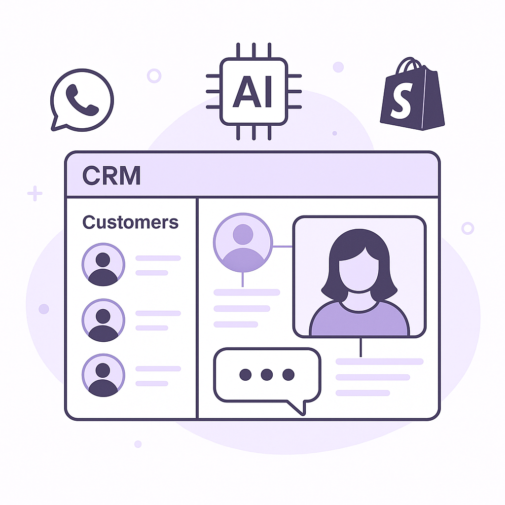

Publishing Recommendation
reviseThe posts generally align with the brand voice but contain a few instances of hype and lack concrete evidence for claims. Some drafts use terms like 'game-changer' and 'huge opportunity' without sufficient backing, which goes against our hard rules.
Today's drafts touch on timely AI trends, offering insights into how these developments could influence retention marketing. However, some posts veer into unsupported claims and hype language. Revisions should focus on providing more concrete examples and avoiding exaggerated terms to maintain credibility and align with our brand voice.
LinkedIn Posts (10)
1. OpenAI launches GPT-6 Astra ★ Purands solution · high priority
CTA: How do you see GPT-6 Astra changing customer engagement in your industry?

⬇ Download image{kind=link}
Image prompt · flat-vector
Caption: GPT-6 Astra transforms customer retention.
Alternative hooks
- OpenAI's GPT-6 Astra is not just an upgrade, it's a game-changer.
- Retention marketing just got a major boost with GPT-6 Astra.
- Imagine AI agents that truly understand your customers - that's GPT-6 Astra.
Research behind this post (sources, summaries & confidence)
OpenAI launches GPT-6 Astra conf 0.90 · AI industry
The launch of GPT-6 Astra signifies a major advancement in AI capabilities, with potential implications for marketing automation and customer engagement. Astra's capabilities could redefine how AI agents are integrated into retention marketing strategies.
Sources & what I took from each
- OpenAI launches GPT-6 Astra: Multiple reputable sources report the launch of GPT-6 Astra, highlighting its enhanced capabilities and potential applications. ↗ read source
Recent news
- OpenAI's GPT-6 Astra is being described as a landmark in AI development, with applications across various industries.
Original trend links
- https://techcrunch.com/2026/09/03/openai-launches-astra-its-powerful-and-controversial-new-model/
- https://www.theverge.com/ai-artificial-intelligence/989601/openai-gpt-6-astra-release
- https://venturebeat.com/technology/welcome-to-the-agi-era-openai-launches-gpt-6-astra
Risks / caveats
- Potential misuse of more powerful AI models in sensitive applications.
- Ethical concerns regarding the deployment and impact of such advanced AI.
2. Anthropic Released Claude Commerce Agents ★ Purands solution · high priority
CTA: How do you see Claude Commerce Agents influencing your e-commerce strategies?
Alternative hooks
- Anthropic's new blueprint is set to reshape AI in e-commerce.
- A new era for AI tools in shopping is unfolding with Claude Commerce Agents.
- Claude Commerce Agents offer a fresh take on e-commerce engagement.
Research behind this post (sources, summaries & confidence)
Anthropic Released Claude Commerce Agents conf 0.80 · AI startups
The release of Claude Commerce Agents offers a new blueprint for shopping and merchant agents, potentially transforming how AI is used in e-commerce and retention marketing strategies.
Sources & what I took from each
- Anthropic Released Claude Commerce Agents: The release is well-documented, with potential impacts on various sectors highlighted. ↗ read source
Recent news
- Claude Commerce Agents are being discussed as a novel approach in AI for e-commerce.
Original trend links
Risks / caveats
- Adoption barriers in integrating new AI solutions with existing systems.
- Potential competitive offerings from other AI startups.
3. Meta AI Released Muse Spark 1.3 ★ Purands solution · high priority
CTA: How do you see efficiency improvements impacting your CRM strategy?
Caption: Efficiency gains with Muse Spark 1.3.
Alternative hooks
- Meta's Muse Spark 1.3 trims the fat: 20% fewer tool calls.
- Can 25% fewer tokens change your marketing strategy?
- What does Muse Spark 1.3 mean for your CRM efficiency?
Research behind this post (sources, summaries & confidence)
Meta AI Released Muse Spark 1.3 conf 0.70 · AI industry
Meta's new Muse Spark model offers efficiency improvements in coding tasks, which could enhance AI-driven marketing operations and reduce costs for CRM and retention marketing solutions.
Sources & what I took from each
- Meta AI Released Muse Spark 1.3: The release is documented with specific improvements over previous versions, suggesting tangible advancements. ↗ read source
Recent news
- Meta's Muse Spark 1.3 is being noted for its potential to streamline coding tasks.
Original trend links
Risks / caveats
- Efficiency gains may not translate directly into improved business outcomes.
- Competitive responses from other tech giants could overshadow this release.
4. AI in Customer Engagement ★ Purands solution · high priority
CTA: How do you see AI changing the way we engage with customers?
Alternative hooks
- Williams-Sonoma is proving AI can drive real customer engagement.
- How do AI assistants like those at Williams-Sonoma boost conversions?
- Engagement through AI: lessons from Williams-Sonoma's success.
Research behind this post (sources, summaries & confidence)
Williams-Sonoma AI assistants drive engagement conf 0.70 · AI industry
Williams-Sonoma's use of AI assistants to enhance customer engagement and conversions highlights the growing role of AI in improving customer experiences and retention.
Sources & what I took from each
- Williams-Sonoma AI assistants drive engagement: The reported increase in engagement and conversions suggests measurable impacts from AI use. ↗ read source
Recent news
- Williams-Sonoma's implementation of AI assistants is being credited with improving customer interactions.
Original trend links
Risks / caveats
- Over-reliance on AI could lead to reduced personal touch in customer service.
- Potential privacy concerns with AI assistants handling customer data.
5. OpenAI’s $1B initiative for essential services ★ Purands solution · high priority
CTA: How do you think AI accessibility will change retention marketing strategies?
Alternative hooks
- Could $1B in AI subsidies redefine retention marketing?
- OpenAI's initiative: A boon for retention marketing?
- What happens when AI tools become more accessible?
Research behind this post (sources, summaries & confidence)
OpenAI’s $1B initiative for essential services conf 0.60 · AI industry
OpenAI's commitment to supporting essential services with subsidized model access and training could drive innovation in retention marketing by making advanced AI tools more accessible.
Sources & what I took from each
- OpenAI’s $1B initiative for essential services: The initiative is reported, but detailed impacts on specific industries like marketing are not deeply explored. ↗ read source
Original trend links
Risks / caveats
- The broad nature of 'essential services' could dilute the impact on specific sectors.
- Execution risks in deploying such a large-scale initiative.
6. Sephora to pilot TikTok Shop experience ★ Purands solution · high priority
CTA: How do you see social commerce reshaping retail strategies?
{kind=link}
Image prompt · flat-vector
Caption: Integrating TikTok into CRM for loyalty.
Alternative hooks
- Sephora is diving into TikTok's social commerce waters.
- TikTok Shop for Sephora: a new chapter in CRM.
- Can TikTok revolutionize Sephora's customer loyalty?
Research behind this post (sources, summaries & confidence)
Sephora to pilot TikTok Shop experience conf 0.60 · CRM and loyalty
Sephora's TikTok Shop pilot represents a novel approach to integrating social commerce into CRM strategies, potentially enhancing customer engagement and loyalty.
Sources & what I took from each
- Sephora to pilot TikTok Shop experience: The pilot is reported, indicating Sephora's strategic move to explore social commerce. ↗ read source
Original trend links
Risks / caveats
- Effectiveness of TikTok Shop in driving measurable engagement and sales is unproven.
- Potential backlash from traditional retail channels.
7. ChatGPT Ads $1B run rate
CTA: What do you think could challenge the growth of AI-driven advertising?
Caption: ChatGPT Ads revenue surge.
Alternative hooks
- In just 200 days, ChatGPT Ads hit a $1 billion run rate.
- AI in advertising just crossed a $1 billion milestone.
- ChatGPT Ads' rapid growth isn't just hype.
Research behind this post (sources, summaries & confidence)
ChatGPT Ads $1B run rate conf 0.90 · AI industry
ChatGPT Ads' rapid growth demonstrates the effectiveness of AI in driving advertising revenue, with potential applications in retention marketing and customer data platforms.
Sources & what I took from each
- ChatGPT Ads $1B run rate: The reported revenue milestone illustrates significant growth and market impact. ↗ read source
Statistics
- ChatGPT Ads achieved a $1 billion annualized revenue run rate in less than 200 days.
Recent news
- ChatGPT Ads' growth is being seen as a benchmark in AI-driven advertising.
Original trend links
Risks / caveats
- Sustainability of such rapid growth in advertising revenue.
- Potential regulatory scrutiny over AI-driven advertising practices.
8. NVIDIA to acquire Hugging Face for $12.93B
CTA: What are your thoughts on how this acquisition could impact the open-source AI community?
Alternative hooks
- When does a $12.93 billion acquisition make sense?
- NVIDIA just bet big on open-source AI.
- Hugging Face is now part of NVIDIA's grand plan.
Research behind this post (sources, summaries & confidence)
NVIDIA to acquire Hugging Face for $12.93B conf 0.80 · AI startups
NVIDIA's acquisition of Hugging Face is significant for the open-source AI community and could accelerate the development of AI infrastructure crucial for marketing platforms.
Sources & what I took from each
- NVIDIA to acquire Hugging Face for $12.93B: Reported by credible sources, the acquisition highlights NVIDIA's commitment to expanding its AI capabilities. ↗ read source
Recent news
- NVIDIA's acquisition of Hugging Face is seen as a move to strengthen its position in the AI sector.
Original trend links
Risks / caveats
- Integration challenges between NVIDIA and Hugging Face could delay expected benefits.
- Potential concerns from the open-source community regarding commercialization.
9. Gatik raises $200M for autonomous freight
CTA: What challenges do you foresee for autonomous freight in your region?
Alternative hooks
- Gatik just raised $200 million - a big leap for autonomous freight.
- Autonomous trucks could reshape logistics. Gatik's $200M funding is a step forward.
- Driverless delivery isn't future talk. Gatik's $200M shows it's happening now.
Research behind this post (sources, summaries & confidence)
Gatik raises $200M for autonomous freight conf 0.80 · AI startups
Gatik's significant funding round for scaling autonomous freight operations can transform logistics in e-commerce, impacting delivery efficiency and customer satisfaction.
Sources & what I took from each
- Gatik raises $200M for autonomous freight: The funding is reported and indicates strong investor confidence in Gatik's technology. ↗ read source
Statistics
- Gatik secured $200 million in Series D funding.
Recent news
- Gatik's funding round is being highlighted as a major boost for autonomous freight technology.
Original trend links
Risks / caveats
- Regulatory hurdles for autonomous vehicle deployment could delay operations.
- Competition from other autonomous freight startups.
10. XPENG IRON humanoid robot funding
CTA: How do you see humanoid robots fitting into the retail landscape?
Alternative hooks
- Over $900 million in funding. That's the power behind XPENG's IRON humanoid robot.
- XPENG's $900 million bet on humanoid robots could reshape retail.
- Humanoid robots in retail? XPENG just raised $900 million to make it happen.
Research behind this post (sources, summaries & confidence)
XPENG IRON humanoid robot funding conf 0.80 · AI industry
XPENG's funding for its IRON humanoid robot platform underscores the potential for physical AI systems in retail, influencing customer service and in-store experiences.
Sources & what I took from each
- XPENG IRON humanoid robot funding: The funding is documented, indicating strong financial backing for the project. ↗ read source
Statistics
- XPENG IRON secured over $900 million at a $6.3 billion valuation.
Recent news
- XPENG's investment in humanoid robots is being noted as a significant step in physical AI.
Original trend links
Risks / caveats
- Technical challenges in developing humanoid robots for practical applications.
- Potential resistance from retailers to adopt new in-store technologies.
Today's Trends
| # | Trend | Category | Why it matters |
|---|---|---|---|
| 1 | OpenAI launches GPT-6 Astra
source source source |
AI industry | The launch of GPT-6 Astra signifies a major advancement in AI capabilities, with potential implications for marketing automation and customer engagement. Astra's capabilities could redefine how AI agents are integrated into retention marketing strategies. |
| 2 | NVIDIA to acquire Hugging Face for $12.93B
source |
AI startups | NVIDIA's acquisition of Hugging Face is significant for the open-source AI community and could accelerate the development of AI infrastructure crucial for marketing platforms. |
| 3 | Meta AI Released Muse Spark 1.3
source |
AI industry | Meta's new Muse Spark model offers efficiency improvements in coding tasks, which could enhance AI-driven marketing operations and reduce costs for CRM and retention marketing solutions. |
| 4 | OpenAI’s $1B initiative for essential services
source |
AI industry | OpenAI's commitment to supporting essential services with subsidized model access and training could drive innovation in retention marketing by making advanced AI tools more accessible. |
| 5 | Anthropic Released Claude Commerce Agents
source |
AI startups | The release of Claude Commerce Agents offers a new blueprint for shopping and merchant agents, potentially transforming how AI is used in e-commerce and retention marketing strategies. |
| 6 | NVIDIA Jetson Orin Nano 2 for drones and robots
source |
AI industry | The introduction of NVIDIA's Jetson Orin Nano 2 is relevant for AI-powered physical systems, which can be used in innovative customer engagement solutions and logistics in APAC markets. |
| 7 | ChatGPT Ads $1B run rate
source |
AI industry | ChatGPT Ads' rapid growth demonstrates the effectiveness of AI in driving advertising revenue, with potential applications in retention marketing and customer data platforms. |
| 8 | OneRail uses Nvidia AI for last-mile delivery
source |
AI industry | OneRail's use of Nvidia AI for last-mile delivery optimization can improve logistics efficiency in e-commerce, directly impacting customer satisfaction and retention. |
| 9 | Williams-Sonoma AI assistants drive engagement
source |
AI industry | Williams-Sonoma's use of AI assistants to enhance customer engagement and conversions highlights the growing role of AI in improving customer experiences and retention. |
| 10 | Sephora to pilot TikTok Shop experience
source |
CRM and loyalty | Sephora's TikTok Shop pilot represents a novel approach to integrating social commerce into CRM strategies, potentially enhancing customer engagement and loyalty. |
| 11 | Meta prices Muse Voice Transcribe at $0.18/hour
source |
AI industry | Meta's competitive pricing for Muse Voice Transcribe could make real-time diarization more accessible to enterprises, enhancing customer service capabilities. |
| 12 | Gatik raises $200M for autonomous freight
source |
AI startups | Gatik's significant funding round for scaling autonomous freight operations can transform logistics in e-commerce, impacting delivery efficiency and customer satisfaction. |
| 13 | XPENG IRON humanoid robot funding
source |
AI industry | XPENG's funding for its IRON humanoid robot platform underscores the potential for physical AI systems in retail, influencing customer service and in-store experiences. |
| 14 | Google DeepMind WeatherNext 3 forecasts
source |
AI industry | DeepMind's advanced weather forecasting model could enhance supply chain and logistics planning, impacting operational efficiency in the APAC region. |
Risk Assessment
- Potential overstatement of AI capabilities in retention marketing without specific examples.
- Use of hype language like 'game-changer' and 'huge opportunity' without detailed justification.
- Inconsistent evidence for claims made about AI's impact on marketing outcomes.
Suggested LinkedIn Comments (30)
Open each post, then paste the copied comment. Nothing is posted automatically.
1. insight · rss:techcrunch.com — The round came together after the data center developer reportedly secured a $13
Post by: rss:techcrunch.com
Why it works: It highlights the significance of the contract and its implications on trading infrastructure, adding depth to the post's information.
↗ Open LinkedIn post to paste comment2. insight · rss:techcrunch.com — The ring maker says that its business has shown significant revenue growth over
Post by: rss:techcrunch.com
Why it works: Connects revenue growth to consumer behavior trends, providing an insightful angle on the post's information.
↗ Open LinkedIn post to paste comment3. expansion · rss:techcrunch.com — The company published a form on its website Thursday soliciting info from people
Post by: rss:techcrunch.com
Why it works: It expands on the strategic implications of the post, drawing parallels to other successful business models.
↗ Open LinkedIn post to paste comment4. opinion · rss:techcrunch.com — The AI era has completely broken enterprise buying patterns, and startups haven'
Post by: rss:techcrunch.com
Why it works: Provides a forward-looking opinion on the impact of AI on enterprise buying, adding value through a predictive stance.
↗ Open LinkedIn post to paste comment5. opinion · rss:techcrunch.com — The company is about to formally launch the gold two-seater, with no steering wh
Post by: rss:techcrunch.com
Why it works: Offers a clear opinion on the potential impact of the technology, enhancing the post's narrative with future implications.
↗ Open LinkedIn post to paste comment6. insight · rss:techcrunch.com — The high-profile startup's annual revenue run rate stands at over $100 million.
Post by: rss:techcrunch.com
Why it works: Acknowledges the financial achievement and contextualizes it within market dynamics, adding depth to the post.
↗ Open LinkedIn post to paste comment7. insight · rss:techcrunch.com — The grid has been straining under the weight of new AI data centers, and that ha
Post by: rss:techcrunch.com
Why it works: Links the challenge to a potential solution, offering a constructive perspective on the post's issue.
↗ Open LinkedIn post to paste comment8. respectful challenge · rss:techcrunch.com — Abliteration.AI is making powerful AI models without guardrails easier to access
Post by: rss:techcrunch.com
Why it works: Challenges the post's premise by introducing ethical considerations, prompting deeper reflection.
↗ Open LinkedIn post to paste comment9. respectful challenge · rss:techcrunch.com — For its new Muse Spark model, intended for operating coding and other agents, Me
Post by: rss:techcrunch.com
Why it works: Acknowledges a strategic move while highlighting potential privacy issues, providing a balanced view.
↗ Open LinkedIn post to paste comment10. respectful challenge · rss:techcrunch.com — OpenAI claims that Astra represents "a new frontier on computer and browser use,
Post by: rss:techcrunch.com
Why it works: Expresses skepticism appropriately, focusing on the need for validation, thus grounding the post's claims.
↗ Open LinkedIn post to paste comment11. insight · rss:www.theverge.com — Officially, Nvidia's controversial DLSS 5 AI rendering was supposed to launch th
Post by: rss:www.theverge.com
Why it works: It highlights the role of community-driven innovation and how it can uncover unforeseen potentials in technology.
↗ Open LinkedIn post to paste comment12. opinion · rss:www.theverge.com — At a private, closed-door event in Austin, Texas today, Tesla officially launche
Post by: rss:www.theverge.com
Why it works: It acknowledges the milestone while emphasizing the practical challenges that come next.
↗ Open LinkedIn post to paste comment13. insight · rss:www.theverge.com — Last September, Steve Ballmer insisted in an ESPN interview that the Clippers we
Post by: rss:www.theverge.com
Why it works: It connects the news to a broader principle of ethical business practice, adding depth to the discussion.
↗ Open LinkedIn post to paste comment14. respectful challenge · rss:www.theverge.com — Does your power bank have "CryoPulse technology" or a "Cyber Window"? If you dis
Post by: rss:www.theverge.com
Why it works: It questions the value proposition of the product, encouraging readers to think critically about marketing versus real innovation.
↗ Open LinkedIn post to paste comment15. insight · rss:www.theverge.com — A Ravenloft series is currently in development from executive producer Alfonso C
Post by: rss:www.theverge.com
Why it works: It acknowledges the project's potential while pointing out the challenges of adapting complex material for new audiences.
↗ Open LinkedIn post to paste comment16. opinion · rss:www.theverge.com — TikTok backed out of a congressional committee's "public roundtable" set for thi
Post by: rss:www.theverge.com
Why it works: It provides a critical perspective on TikTok's choice, highlighting the importance of transparency and engagement in safety discussions.
↗ Open LinkedIn post to paste comment17. insight · rss:www.theverge.com — Researching, buying, then finally assembling a sound system for your TV is daunt
Post by: rss:www.theverge.com
Why it works: It balances enthusiasm for the discount with practical advice on evaluating personal needs before purchasing.
↗ Open LinkedIn post to paste comment18. respectful challenge · rss:www.theverge.com — OpenAI's next big model is here: GPT-6 Astra. The company calls it a "generation
Post by: rss:www.theverge.com
Why it works: It acknowledges the advancement while urging a closer look at practical implications, particularly in high-stakes areas.
↗ Open LinkedIn post to paste comment19. opinion · rss:www.theverge.com — Microsoft is announcing some major changes to Xbox Cloud Gaming today, less than
Post by: rss:www.theverge.com
Why it works: It presents a balanced view on how the change could affect users, acknowledging potential benefits and drawbacks.
↗ Open LinkedIn post to paste comment20. insight · rss:www.theverge.com — Microsoft says it will let anyone access Xbox Cloud Gaming in November, without
Post by: rss:www.theverge.com
Why it works: It highlights the potential benefits of the model while focusing on the importance of pricing strategy.
↗ Open LinkedIn post to paste comment21. opinion · rss:feeds.arstechnica.com — CDC staff had already accepted the measles death reports when RFK Jr. meddled.
Post by: rss:feeds.arstechnica.com
Why it works: The comment addresses the core issue of misinformation impacting public health decisions, offering a clear stance.
↗ Open LinkedIn post to paste comment22. insight · rss:feeds.arstechnica.com — Over 1 million Game Pass subscribers will have to pay more for their heavy strea
Post by: rss:feeds.arstechnica.com
Why it works: The comment provides a perspective on the business model sustainability, linking pricing strategies with user behavior.
↗ Open LinkedIn post to paste comment23. insight · rss:feeds.arstechnica.com — Researchers now have clear new targets and insights for developing a <em>Shigell
Post by: rss:feeds.arstechnica.com
Why it works: The comment highlights the potential global health impact of the vaccine research, making a broader connection.
↗ Open LinkedIn post to paste comment24. expansion · rss:feeds.arstechnica.com — Open source, commercial, single-hop, multi-hop, mixnet? The array of options is
Post by: rss:feeds.arstechnica.com
Why it works: It expands on the post by emphasizing the importance of having diverse options for personal privacy solutions.
↗ Open LinkedIn post to paste comment25. insight · rss:feeds.arstechnica.com — Circuit split raised the odds that SCOTUS will rule on Kalshi fight against stat
Post by: rss:feeds.arstechnica.com
Why it works: The comment offers a broader legal perspective on how this case could shape future regulatory approaches.
↗ Open LinkedIn post to paste comment26. insight · rss:feeds.arstechnica.com — Pro soccer team's CTO points to "issues with the Broadcom takeover."
Post by: rss:feeds.arstechnica.com
Why it works: The comment contextualizes the issue within the larger framework of corporate mergers, providing a strategic perspective.
↗ Open LinkedIn post to paste comment27. insight · rss:feeds.arstechnica.com — Insect-inspired "sparse coding" does fast learning, avoids catastrophic forgetti
Post by: rss:feeds.arstechnica.com
Why it works: It connects the AI development to natural systems, offering an insightful commentary on innovation inspired by nature.
↗ Open LinkedIn post to paste comment28. insight · rss:feeds.arstechnica.com — Service interruptions hit ChatGPT, Claude, Grok, and Gemini practically simultan
Post by: rss:feeds.arstechnica.com
Why it works: It ties the service outage to broader operational strategies companies should consider, adding depth to the discussion.
↗ Open LinkedIn post to paste comment29. insight · rss:feeds.arstechnica.com — Americans fear there are no cheap alternatives as tariffs suddenly hit drones.
Post by: rss:feeds.arstechnica.com
Why it works: The comment links the tariffs to strategic business responses, offering a concrete angle on managing trade disruptions.
↗ Open LinkedIn post to paste comment30. insight · rss:feeds.arstechnica.com — The annual award ceremony features miniature operas, scientific demos, and "24/7
Post by: rss:feeds.arstechnica.com
Why it works: It focuses on the value of creative dissemination of science, making the post relevant to broader educational and engagement strategies.
↗ Open LinkedIn post to paste comment